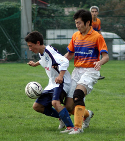
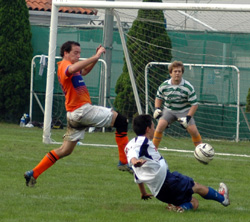

|
YC&AC Saturday 15th October. Barbarians finally ran out 3-2 winners over YCAC 2nds in a good-natured but competitive game at Yokohama.
YCAC 2nds, in only their second season in the the TML, are looking to improve on their performances from last year. Many of last years squad have re-signed for this season, notably Ryuji (Skippa), Per (Sponsa - cheers Per), Edward, Paul and Nick. The team have also been strengthened by tempting Mark "Bailsy" out of retirement, and adding the undoubted goalkeeping talents of the Grub (Daniel Vickers to those who don't know him). Neil adds experience at left-back and Alex brings some guile to midfield. Presence (i.e. size!) has been added by the re-appearance of Rob O'Grady and Steve McKie in the back four, and with the mercurial Genki on temporary leave of absence from Denmark we looked well-set for our opening fixture.
For long spells of the game it looked like YCAC would mark their first game with a win. Despite being under pressure for long periods in the 1st half it was YCAC who snuck into the lead, Edward getting the vital touch at close range from a cross from the right side. 1-0 to YCAC at half-time. Barbarians gave early warning of dangers to be faced with two towering headers from corners which must have missed by inches.
Second half was an even affair. Barbarians drew level with a freekick from distance by their playmaker. YCAC re-gained the lead with an excelent solo run and finish by Genki. Barbarians drew level again when the YCAC defence parted like the Red Sea and allowed the midfielder a shot on goal which evaded Grub. And in truth had it finished there I think both teams would have been content with a point. But funny old game it is and Barbarians edged it in injury time with a shot which I don't think anybody could have predicted. About 20 yards out, completely miss-hit off the shinpad, it arced gracefully in the air as if hit by a sand-wedge before sliding agonizingly just under the bar. Despite Grubs desperate back pedalling he was unable to keep it out (Seaman vs Ronaldinho for anybody trying to imagine the scene).
So jubilation for the Barbarians. YCAC would justifiably feel as if they had been mugged, but as we sat in the bath after the game the senior pro's (ahem) convinced themselves that there were more positives than negatives to take away. We were competitive, should have taken a point and for the first game the team gelled reasonably well.
Thanks to the opposition and the ref - a game with only 1 or 2 bad tackles and played in the right spirit.
S. McK
|